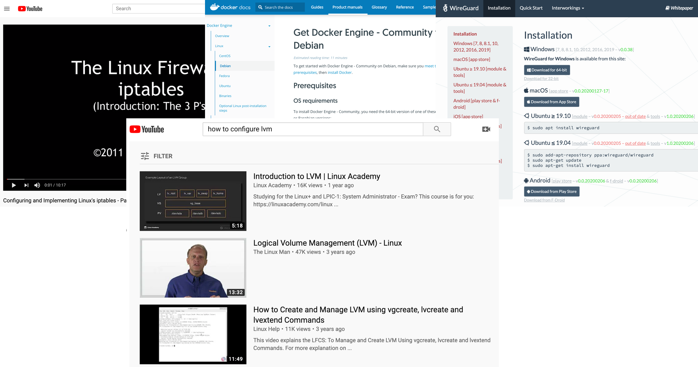
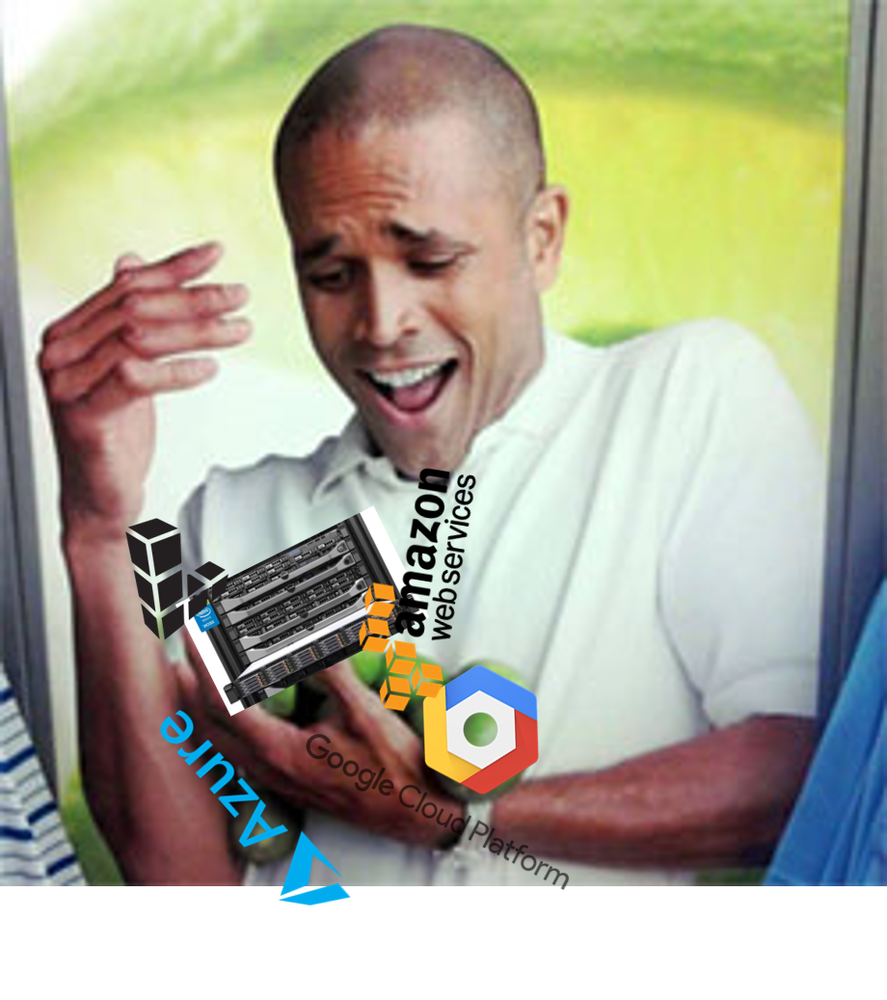
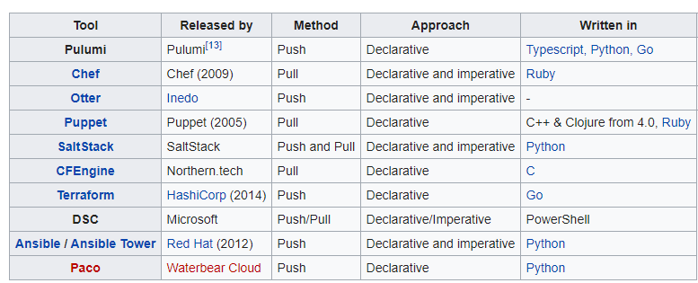
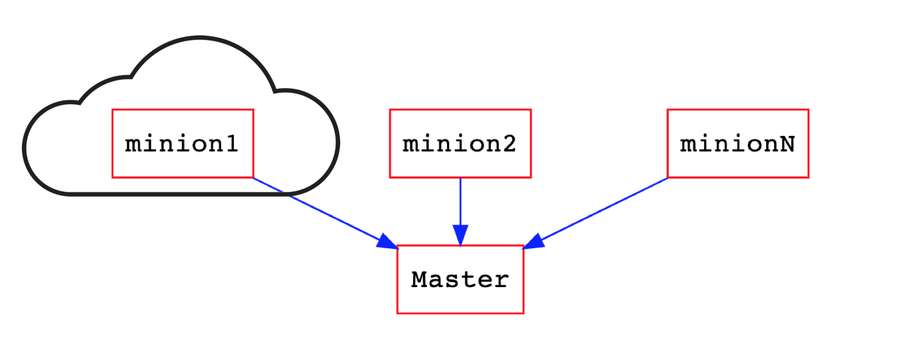
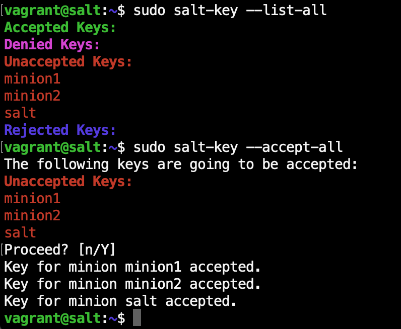
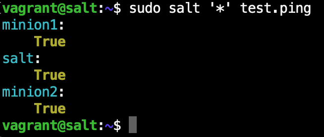
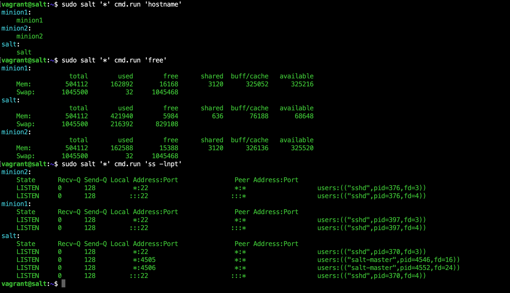
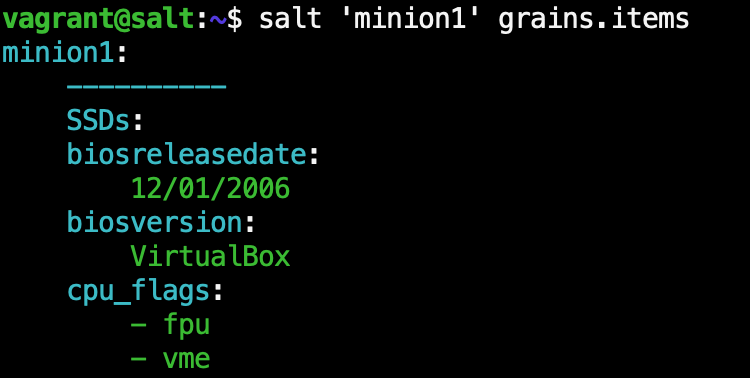
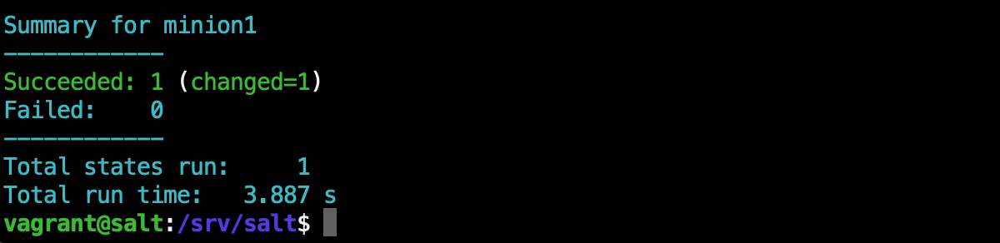
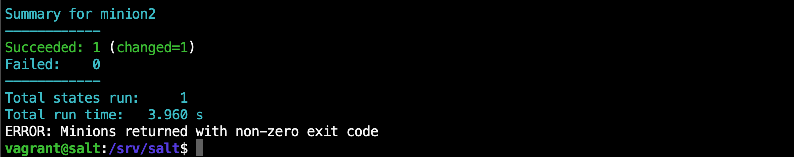

github.com/nickadam/salt-talk
An intro to SaltStack

Software to automate [and document] the management and configuration of any infrastructure or application.
About Me



- Word docs
- Text files
- Uber 1337 h4x0r shell scripts
- Talking to yourself on slack
- Bookmarks to stack overflow answers
& track it all with git

wikipedia.org/wiki/Infrastructure_as_code
Lab/demo time!
github.com/nickadam/salt-talk/tree/master/lab- Start environment
- Install salt master
- Install salt minions
- Accept keys
- Test connectivity
Install salt master
salt-talk/lab$ vagrant ssh master
$ sudo apt install curl
$ curl -L https://bootstrap.saltstack.com -o install_salt.sh
$ sudo sh install_salt.sh -P -M
Install salt minions
salt-talk/lab$ vagrant ssh minion1
$ sudo apt install curl
$ curl -L https://bootstrap.saltstack.com -o install_salt.sh
$ sudo sh install_salt.sh -P
Accept the keys
Test connectivity


Targeting minions
- 'server*' = server1 server2 server3 server-fred
- 'server?' = server1 server2 server3
- 'server[1,3]' = server1 server3
- 'server[1-3]' = server1 server2 server3
- -L 'server1,server2'
- -G 'role:worker' = whoever has the grain role=worker
- -S '192.168.0.0/16' = whoever is in the subnet
Compound matchers
-C 'G@role:worker andG@os_family:debian and
not *fred'

xyz.sls
xyz:
pkg.installed
xyz:
cmd.script:
- source: salt://xyz-installed.sh
cd /srv
git config --global user.name "John Doe"
git config --global user.email johndoe@example.com
git init
...

base:
'minion?':
- screenfetch.installed
...
